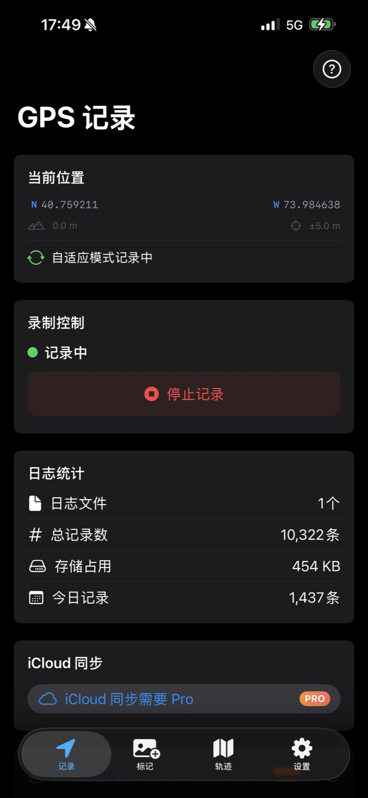
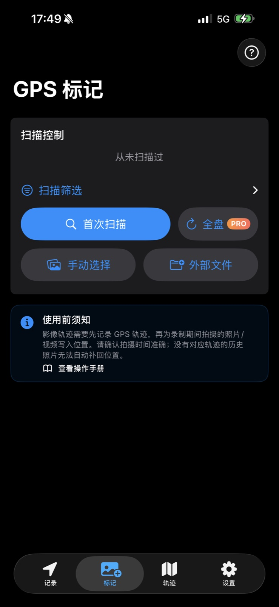
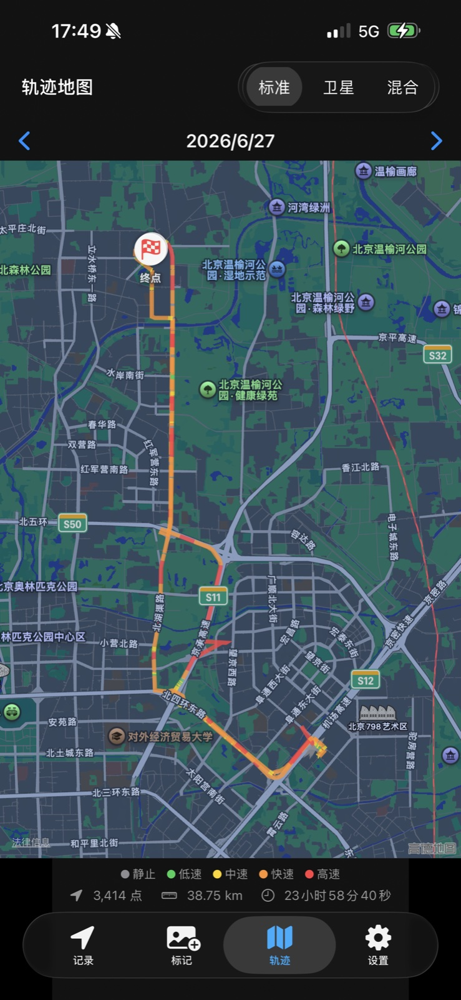

01
出发时，记录轨迹
拍摄前，在 iPhone 上打开 PinShot 并开始记录。带着手机出发，用相机记录眼前的风景。
为每一个值得记住的地方
相机记下瞬间，PinShot 记下地点。用 iPhone 记录旅途轨迹，再按拍摄时间，为照片和视频补上缺失的位置信息。
适用于 iPhone、iPad 和 Mac · 免费下载，含 App 内购买
请在拍摄前开始记录。补写位置需要对应时段的 GPS 轨迹，以及准确的拍摄时间。

出发前的一小步，回忆里的一张地图
无论是带着相机远行，还是周末随意走走，让照片和拍摄地点一起留下来。
拍摄前，在 iPhone 上打开 PinShot 并开始记录。带着手机出发，用相机记录眼前的风景。
将支持的影像导入照片图库，或用 Mac 的 Pro 功能处理文件与文件夹。先确认相机的拍摄时间准确。
PinShot 将拍摄时间与记录的轨迹匹配，写入位置信息。检查处理结果，让影像可以按地点查找。
已经结束的旅行，也需要当时对应的 PinShot 轨迹。没有匹配的记录，就无法自动找回过去的拍摄地点。
查看完整上手指南看看 PINSHOT 如何工作
在按下第一张快门之前
拍摄前开始一次记录。PinShot 支持后台记录，并在静止时自适应省电，让你可以专注眼前的风景。

旅途结束，回忆开始整理
找到缺少 GPS 信息的影像，选择需要处理的项目，再将拍摄时间与 PinShot 轨迹进行匹配。

重新走一遍记忆里的路线
在地图上回顾记录的路线，查看速度分段、距离、耗时与记录点，让走过的路更清晰。

你的回忆，由你保管
GPS 轨迹默认保存在设备本地。PinShot 不运营轨迹追踪服务器，不集成广告 SDK，也不需要注册 PinShot 账号。
Pro 用户可以自行选择，通过个人 iCloud 同步 GPS 轨迹。应用不会向第三方出售或分享你的定位数据。
阅读 App 隐私政策从下一次出发开始
免费完成第一次标记。需要处理更多影像、跨设备整理时，再选择适合你的 Pro 方案。
用自己的照片，体验完整的核心流程。
可选择一次购买的永久版，也提供月度和年度订阅。
具体价格与可用优惠，以你所在地区的 App Store 显示为准。月度和年度订阅会自动续订，除非提前取消。永久版是独立的一次性购买，无订阅续费。
需要有覆盖拍摄时段的 PinShot GPS 轨迹，并且照片的拍摄时间准确。没有匹配的记录，PinShot 无法自动还原过去的行程，也不会仅凭画面推测原始拍摄地点。
支持 JPEG、HEIC/HEIF、PNG、TIFF、DNG 照片，系统照片图库中的实况照片，以及 MP4、MOV、M4V 视频容器，包括常见的 H.264 和 HEVC 视频。CR2、CR3、NEF、ARW、RAF、RW2 等相机专有 RAW 格式不会被直接修改；不支持的影像会跳过处理。
在 iOS 上，标记会生成带 GPS 的副本，并保留原片，由你检查后在“照片”中手动清理。已编辑影像会保留当前可见效果，但之前的编辑指令和“复原”历史不会转移。Mac 照片图库采用验证后的替换流程，Mac 文件夹标记可能原地修改所选文件。重要原片建议保留备份。
可以。使用 iPhone 记录的 GPS 轨迹，通过 PinShot 自身的日志格式传入，或使用 Pro 通过个人 iCloud 同步。Mac 可以处理支持的影像，Pro 还提供文件与文件夹批量标记。Mac 不能代替 iPhone 完成随身 GPS 记录。
目前 Pro 可以将 PinShot 的轨迹导出为 GPX，但尚不支持通用 GPX 轨迹导入。日志导入使用 PinShot 自身的记录格式。
不需要。免费版每月可标记最多 20 个影像项目。Pro 同时提供独立的永久买断、月度订阅与年度订阅；当前价格和是否符合试用资格，以 App Store 显示为准。
下一段值得记住的旅程
下次出发前，开始你的第一次轨迹记录。